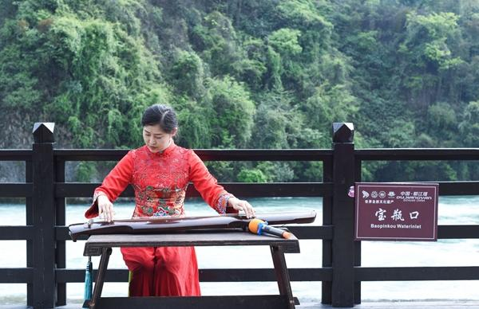
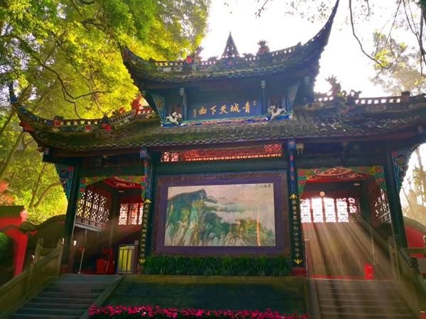

2020-04-05 16:30 四川在线官方帐号
四川在线消息(记者 杨艺茂)4月5日，“2020中国·都江堰云放水活动”正式拉开帷幕，全球数万名网友“云聚”都江堰，开启“云放水”。这场文化和旅游的盛会，不仅开启了天府春耕新模式，也为都江堰市旅游业复工复产按下了“快进键”。
5日上午，巴蜀文化专家赵文侨、当红主播刘羊漾与全球网友“云互动”，在古风浓郁的“云放水”活动主题页面中共同“点亮都江堰”，触动链接杩槎的牵引绳，拉倒杩槎和竹笼，汇聚全球力量共同完成“云放水”。首次借助互联网开启“云放水”，展现了千年传承的古老仪式与现代科技的紧密融合。
互联网搭台，专家与全球网友一同探讨了都江堰水利工程及放水节的历史渊源，回顾了往年祭祀仪式、放生祈福、打水头等多项传统民俗环节，解读了放水令、砍杩槎、放水等文化内涵，全球网友在感悟都江堰放水节深刻历史底蕴的同时，进一步了解了“三遗之城”都江堰如何打通“绿水青山”向“金山银山”的转变通道，以及建设美丽宜居公园城市和国际化生态旅游城市的相关进程。在活动中，近千名网友抽取了都江堰景区免门票大礼，此外，古琴、茶艺等传统文化展演也给全球网友带来了一场精彩绝伦的视听盛宴。
记者了解到，为抢占旅游“疫后”发展先机，全面恢复都江堰市旅游市场和城市活力，日前，青城山—都江堰景区创新推出了“你消费，我免费，这个四月青城山—都江堰任你游”“大爱无疆，感恩永恒，青城山—都江堰景区为四川援鄂医疗队员终身免票”等多项感恩福利活动。此外，青城山—都江堰景区也将联动市内景区景点、酒店、餐饮等涉旅行业，多维发力推进旅游业快速复工复产。